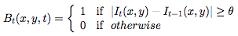
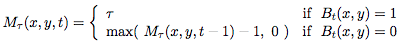
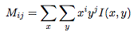
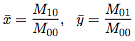
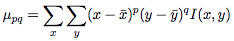
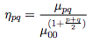

CS4495 - Spring 2015 - OMS Introduction to Computer Vision
Problem Set 7: Motion History Images
Due Wednesday, April 22, 2015 at 7:00 am EST
Description
In this Problem Set you will implement Motion History Images. First you’ll implement a simple background subtraction method (frame differencing or median/averaging). That will give you a motion signal to analyze over time.
To test this we’ve recorded 3 people doing 3 trials of 3 different actions. The videos are saved as separate AVI files names PS7AxPyTz.avi where ‘x’ is the action number, ‘y’ is the person number and ‘z’ is the “trial” number.
What to submit
Download and unzip the ps7 folder (also under: https://www.udacity.com/wiki/ud810): ps7.zip
Rename it to ps7_xxxx (i.e. ps7_matlab, ps7_octave, or ps7_python) and add in your solutions:
ps7_xxxx/
- output/ - directory containing output images and other files your code generates
- ps7.m or ps7.py - code for completing each part, esp. function calls; all functions themselves must be defined in individual function files with filename same as function name, as indicated
- *.m or *.py - Matlab/Octave function files (one function per file), Python modules, any utility code
- ps7_report.pdf - a PDF file with all output images and text responses
Zip it as ps7_xxxx.zip, leaving out the input folder, and submit on T-Square.
*** Please do not submit the input folder for this assignment, remove it when creating your zip file. ***
Guidelines
- Include all the required images in the report to avoid penalty.
- Include all the textual responses, outputs and data structure values (if asked) in the report.
- Make sure you submit the correct (and working) version of the code.
- Include your name and GTID on the report.
- Even if the code is not working, submit the code as the instructors can read through the algorithms to give partial credit. Comment your code appropriately.
- Late submissions should be emailed to the TAs to be graded for partial credit.
Questions
- Frame-differenced MHI
To get images that have only the moving person we can do two things. One way is to extract the person from the background and use the entire person as a signal. We have actually found that to be more robust than the frame differencing method but requires having a background image to remove. Here we just do frame differencing.
To compute the frame differenced MHI you first need to compute the frame difference sequence. Call this the binary image Bt (x, y) which is defined simply as:

θ needs to be chosen such that it tends to see motion in the right places and not too much noise. To get a cleaner image you should try blurring (perhaps significantly) the original imagery. You might want to “clean up” the binary images using a morphological OPEN operator (see the IMOPEN in Matlab) to remove noise.
- Create an binary sequence from the PS7A1P1T1.avi and output binary frames for t = 10, 20, 30.
Output:
- binary image for frame 10 as ps7-1-a-1.png
- binary image for frame 20 as ps7-1-a-2.png
- binary image for frame 30 as ps7-1-a-3.png
- Given the sequence Bt we can construct the MHIs. MHI image M at time t is defined as:

τ needs to be chosen such that it captures the full extent of the action. If you use a different τ for each action, you should scale your MHI image by a value to make the maximum the same for all MHIs, e.g. the MHI would range in value from 0.0 to 1.0.
Create an MHI M𝜏 (x, y, t) for each of the three actions. Of course you’ll have to pick a τ for each action and you’ll also need to choose a t that ”shows the action best” - probably the t where the action just ends. That is, if a sequence is 60 frames, you might select to show the MHI at time t=45 if the action ends there. And if you had τ = 20, the MHI for the action would be constructed from frames 26 through 45. You can select the best t frame by hand as well as select which of the nine sequences for each action (3 subjects, 3 trials each) you use to generate these representative MHIs.
Output: The three MHI images, one for each action.
- MHI image for action A1 as ps7-1-b-1.png
- MHI image for action A2 as ps7-1-b-2.png
- MHI image for action A3 as ps7-1-b-3.png
Output: (Textual response in report)
-Mention what τ you’re using for each
- Recognition using MHIs
Now we have to characterize the MHI. In class we showed the Hu moments, though the equations we showed did not include the scale invariance. For this problem set we don’t need rotation invariants so we’re just going to try both the unscaled and scaled central moments µpq and ηpq . The equations for µpq are defined with respect to the regular moments:

Given this definition, the average x and y are:

and the central moments are defined as:

Under this definition, note that µ10 and µ01 are both zero. To achieve scale invariance we define the scale invariant moments:

You’re going to compute all the moments for <pq> ∈ {20, 02, 12, 21, 22, 30, 03}. And, you’ll compute this for both the MHI and the thresholded MHI where any non-zero value is set to 1 (this is the MEI from lecture). This gives you 14 numbers to describe the MHI. You might want to normalize the intensities of the MHI by scaling the values of the MHI pixels so that the maximum value is some fixed number. Also, for each of the given sequences you’ll have to pick a time t that is the MHI to represent that action. Again, these can be picked by hand.
With this description you can now do nearest neighbor recognition in a “leave one out cross validation” recognition test. In this case we’ll do the easiest case: simply test the MHI description for each video against the others. The “nearest” one is the “action” that is recognized. Distance might be straight Euclidean(square root of the sum of the squares of the difference vector) or you might scale the the elements of difference vector differently because the magnitude of the moments are different depending upon the order (p + q).
With the matching method you can create a 3x3 “confusion” matrix where the row i column j is the percentage of videos of action i that are best matched by a video of action j. Perfect matching would yield a diagonal matrix. You will try this using both the central moments µpq and the scale invariant ones ηpq .
- Create the confusion matrix for the 3 actions for both the central and scaled moments. See if scaling the dimensions of the difference vector can achieve better results.
Output: (Textual Response in Report)
Include the best confusion matrices you could achieve. Describe what if any change you made to the distance function for matching to achieve this result.
- So you probably just got very good confusion matrices. That’s because we cheated. If you look at the best match for a given input, it probably was the same person doing the same action. Hardly a tough test. This time you’re going to remove the test subject from the ”training data”. For example, if we remove subject 1 (P1) from the data, we will test on all 9 of P1’s sequences and get a confusion matrix for P1. We can then do the same for P2 and P3. You may now find that you need to play with the scaling more carefully to get decent results. Or, you may find it very hard to get decent results.
Create the confusion matrices for each of the subjects as described as well as the average confusion matrix. So there are 4 confusion matrices, one for each subject showing the recognition results when not including that subject in the target data, and one matrix which is the average of those 3.
Output: (Textual Response in Report)
Include the best confusion matrices you can achieve.
Describe what you had to do to get these.